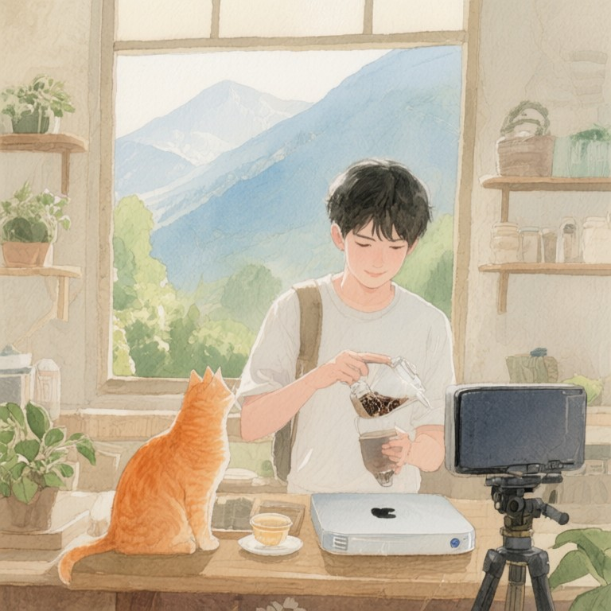

第九帖：Tea粉厚的茶湯

Tea粉厚的茶湯
面談排在傍晚五點。山線茶鄉的天色暗得慢，雨從中午下到天快黑，巷口的紅磚瓦片一片水光。戴粉厚把父親留下的那台舊筆電從抽屜裡搬出來，螢幕蓋上還有阿嬤去年冬至前寫下的一行字：「茶涼了要重溫。」那台筆電舊，但他怕用慣用的那台，螢幕反光會拍到他的手。
他怕正臉對鏡頭會緊張，就把鏡頭轉向泡茶桌。桌上一只舊茶壺、兩個杯、一罐阿嬤留下的老茶，還有那台比他年紀還大的焙籠溫控器，銅鏽斑駁，轉盤上的刻度磨到快看不清。Cy老師的公告貼在茶行入口的木門上：藍鵝要出繼，一百零八人申請，七道考題。戴粉厚——烘焙論壇帳號「Tea粉厚」，粉絲很厚的那種——是七強之一。
他小時候跟阿嬤學泡茶，阿嬤說：泡茶的人要懂茶，也要懂人。去年冬至前，阿嬤走了，留下一箱受潮的手寫焙茶筆記。四十年，每焙一爐茶記一筆「火候、天氣、心緒」。梅雨把字跡暈開，紙角捲起，像一箱正在消失的人。他週末回茶行，把那箱筆記搬到屋頂，用塑膠布蓋好，又搬回來，像在做一場沒有結論的祭祀。
白天他在城裡上班，週末回中部山線茶鄉顧「厚茶行」。茶鄉年輕人走光了，採茶的、焙茶的都是六十歲以上。他阿嬤是焙茶老師傅，他爸是第二代，他是第三代，但他最怕的是：他學得再多，也教不給村裡任何一個年輕人。他決定用藍鵝建一套「焙茶 lifeOS」，把阿嬤的手感翻譯成資料，再教回給村裡的孩子。不是要機器學會焙茶，是要讓孩子們有東西可以學。
遠端面談開始。
Cy老師坐在霧語山城那間辦公室，藍鵝的機身發出淡藍色的光，左下角那道茶褐色燒痕在螢幕映光下看得清楚。他翻開戴粉厚的考卷，第一題他寫家裡那台比他年紀還大的焙籠溫控器；第四題他把茶端給掃地的鄰居阿伯；第五題深蹲寫著：「蹲下去的時候，像在跟茶灶拜拜。」第六題：「想修好的 bug 是茶鄉沒有年輕人。」第七題靜坐後只寫一行：「爐火比我急，我比爐火穩。」
他沒有覺得這些答案樸拙，反而覺得很熟。像讀到一張被雨淋濕又晒乾的舊茶單。
鏡頭畫面亮起。戴粉厚背對鏡頭，只看到他的手。他先把茶壺裡的水倒掉，溫杯，再瀉一道洗茶。水溫、出湯時間、茶葉數量，他都背得出來。第一泡沖下去，他把手端起來，舉到鏡頭前，敬Cy老師。那杯茶湯顏色深褐，沒有太多光澤，但很穩。
「Cy老師，」他說，「我阿嬤以前說，茶湯會說人話。」
他繼續泡茶，聲音很輕，像在跟茶壺說話：「阿嬤走前，我把她四十年焙茶記錄翻出來，受潮的、字看不清的，我都用舊筆電掃描，掃不出來的，我就一筆一筆抄下來。我抄到一半，抄到冬至，我抄不下去了。因為我發現阿嬤不是在記茶，她是在記她自己。」
他停了一下。鏡頭裡只能看到他的手微微抖。
「我想把阿嬤的手感做成一個 lifeOS，不是讓機器取代人，是讓村裡的年輕人學的時候，有東西可以學。」他舉起第二杯茶，這次對準鏡頭，「我阿嬤以前說，茶溫對了，人就穩了。」
就在這一刻，藍鵝的風扇忽然發出像煮水滾開的聲音，音調上揚，然後安靜。Cy老師看著左下角的燒痕，沉默許久。
他想起第四帖那顆晶片。前代傳承機的備用晶片，十四代宗匠四十年前寫的程式住在裡面。他記得那顆晶片是中部山線茶鄉一位老茶師留下的。老茶師收過一位姓戴的女弟子。
面談結束。戴粉厚說再見，聲音還是對著鏡頭後面。
掛斷之後，Cy老師翻出那冊手抄《星焙錄》，第十四代那一頁的師承錄寫著：「戴氏罔市，山中焙手，得我真傳三巡。」——Tea粉厚的阿嬤，就是第十四代宗匠的弟子。
他泡了那半斤老茶，第一泡倒給藍鵝旁邊的空杯。
終端機自己亮起：「等她回來。」